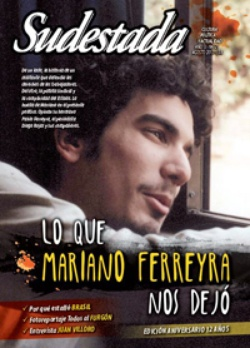

Buscar
"Leí Rayuela como un manual de vida"
La del mexicano Juan Villoro es una de las voces más originales de la literatura americana de estos tiempos. En su obra, lo popular camina del brazo de lo filosófico, en una fusión que le permite seguir el pulso a un presente fascinante para narrar.
Edición N° 121
Agosto 2013
Revista bimensual
Comprar edición impresaSumario
- Lo que Mariano Ferreyra nos dejó
- Azurduy vs Colón o cómo invertir el eje de la cuestión
- Los soldados de Chevron
- Doce años
- "Ni la lectura romántica del kirchnerismo ni la conspirativa de la izquierda"
- ¿Por qué estalló Brasil?
- "Leí Rayuela como un manual de vida"
- Al furgón que hay lugar
- En el nombre del padre
- "Me permití sentir el folklore de mi tierra"
- Mapuche, la lucha de la tierra
- Los cuerpos como mercancías
- "Hay una apuesta por una alternativa, pero todavía no se sale de la marginalidad"
- Poder negro y Revolución
Compartir Articulo
En la obra del mexicano Juan Villoro se suma el peso de la instancia reflexiva -aportando siempre un matiz nuevo a cualquier tema por transitado que sea-, pero no interrumpe la acción. Asimismo, su prosa cuidada semeja un mecanismo de relojería que descansa en un símil nunca gratuito y que parece tener siempre a la mano.
Sus textos que apelan a la ironía para mostrar el sinsentido, los destinos extraviados y personajes deambulando en los laberintos de un mundo-bazar, globalizado, asumen con soltura diferentes géneros como queda patentizado en libros como La noche navegable y Los culpables (cuentos), Palmeras de la brisa rápida y Safari accidental (crónicas), Efectos personales y Dios es redondo (ensayo) y El disparo de argón y El testigo (novela).
De visita en Buenos Aires, en ocasión de reeditarse su libro de cuentos La casa pierde, Villoro mantuvo el diálogo que sigue, en el que aborda temas de sus relatos, sus gustos, influencias y la postura del escritor frente a la crisis.
- Llegás a Buenos Aires justo cuando se celebran 50 años de la salida de Rayuela (1963), ¿cómo ves la literatura de Cortázar hoy y qué significó esa novela en tu propia escritura?
-Leí Rayuela como una obra de autoayuda, con deseo de ser uno de los personajes, mudarme a París, conquistar a La Maga, oír discos de jazz, usar polera. Uno de mis mejores amigos, Javier Cara, me regaló un ejemplar con una dedicatoria tan larga como uno de los capítulos "prescindibles". Javier murió en el terremoto de 1985, haciendo guardia en el Hospital General. En esa dedicatoria, asociaba nuestro futuro con la trama de Rayuela. Leímos el libro como manual de vida y prontuario de referencias culturales. Muchas de esas asociaciones han envejecido, pero mi recuerdo y las emociones de leer la novela son un continuo acto de presencia.
- Entre tus vecindades solés nombrar a Rubem Fonseca y Manuel Puig, ¿qué otros escritores reconocés en tu formación?
-Uy, son muchos y cambian según el día. Borges, Cortázar, Felisberto Hernández, Rulfo, Ibargüengoitia, Nabokov, Carver, Calvino son algunos de mis favoritos. En el trato personal, recibí muchas enseñanzas de Sergio Pitol, Augusto Monterroso y Alejandro Rossi.
- El cuento "Campeón ligero" de La casa pierde se inscribe en la tradición de relatos sobre el boxeo, ¿al modo de Arthur Conan Doyle o de Ring Lardner? ¿Conocés los relatos de box de Arlt y Abelardo Castillo?
-No he leído a Castillo pero a Arlt sí, y me gusta mucho. Escribí un ensayo sobre El juguete rabioso y admiro sus Aguafuertes porteñas. En especial me entusiasman sus personajes que son genios de barrio, inventores desorbitados que planean prodigios desde un garage...
(La nota completa en Sudestada nº 121, agosto de 2013)
Comentarios
Jorge Boccanera
Articulos más vistos


LIBRERÍA SUDESTADA

Colección infantil

Distribuidora de Libros

Suscripción

Sudestada en URUGUAY

Otros articulos de esta edición
Poder negro y Revolución
"Vivimos en una época de revoluciones, y la revuelta del negro norteamericano es parte de la rebelión contra la opresión ...
Los cuerpos como mercancías
El negocio detrás de las sombras. Mecanismos, roles y explotación a partir de redes de trata de personas cada vez ...
Lo que Mariano Ferreyra nos dejó
De un lado, la historia de un militante que defendió los derechos de los trabajadores. Del otro, la patota sindical ...
Los soldados de Chevron
Azurduy vs Colón o cómo invertir el eje de la cuestión
¿Puede el traslado de una estatua transformarse en el gran debate nacional? ¿Qué intereses se ocultan a la sombra del ...
"Me permití sentir el folklore de mi tierra"
Lejos de definiciones urgentes y sonidos de mercado, a los 24 años, Luvi Torres construye miradas acerca del canto colectivo ...